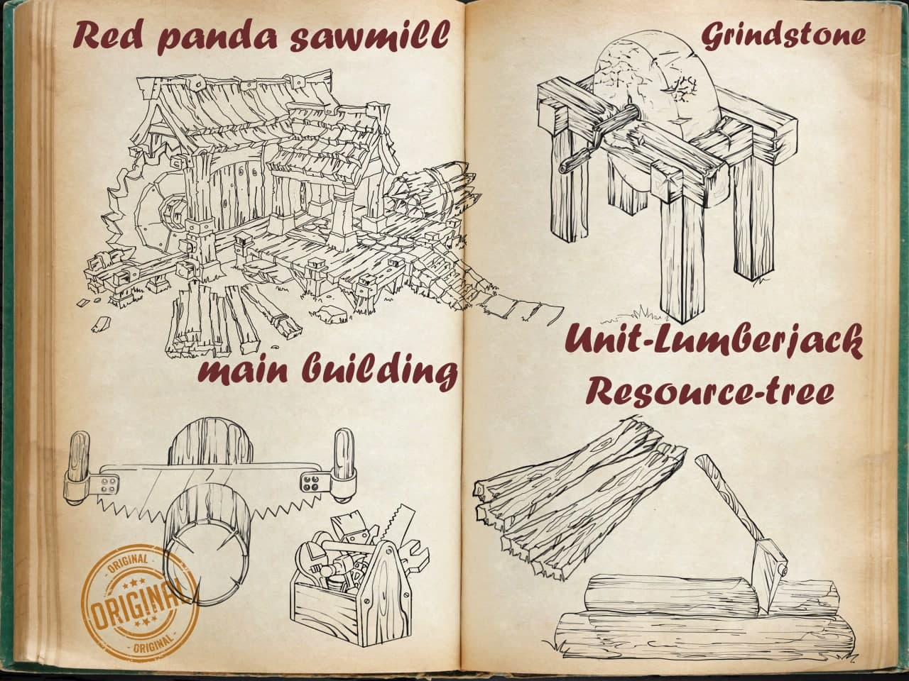

The inhabitants of Metoland love to eat. You won't get much wood, stone and clay on an empty stomach. That is why a farmer is a sought-after and honorable profession. They grow tasty and healthy products on their plantations. The more fruits and vegetables grown, the higher the level of happiness and well-being of the red panda settlement of Metoland!
Жители Метоленда любят покушать. Не добудешь много дерева, камня и глины на голодный желудок. Поэтому фермер востребованная и почетная профессия. На своих плантациях они выращивают вкусные и полезные продукты. Чем больше взращивается овощей и фруктов, тем больше уровень счастья и благоустройства поселения красных панд Метолеэнда!
Metoland的居民喜欢吃东西。所以做农场主是热门营生，这个职业很受尊敬。空着肚子是弄不到很多木头、石头和黏土的。农场主们在自己的种植园里栽培美味、营养的食物。长出来的蔬菜和水果越多，小熊猫的居住环境就越好、幸福度也越高！
The quarries of Metoland are famous for their miners. These miners dig deeper and deeper into the rock, day and night, to provide the inhabitants of nearby villages with the resources they need. Stone is needed not only to strengthen the foundations of buildings, but also to build walls and gouges around their settlements. Equip your miners with better tools and get more and faster out of the stone!
Каменоломни Метолэнда славятся своими рудокопами. Эти работяги днем и ночью глубже и глубже проникают в глубь горных пород, чтоб обеспечить жителей ближайших деревушек нужными ресурсами. Камень необходим не только для укрепления фундаментов зданий, но и для постройки стен и строжевых башен вокруг своих поселений. Снабжайте рудокопов более совершенными инструментами и добывайте камень быстрее и больше!
Metoland采石场的声誉好不好取决于场里的矿工。这些做苦力的人日以继夜地往岩层深处挖，才能保障附近村民所需资源的供应。给房子加固地基，筑墙，在各个居民点周围建守望塔的时候都需要石头。为矿工配备更高性能的工具，增加石头的开采速度和数量！

Timber is one of the most important resources. The extraction and processing of timber is necessary to build buildings and create tools. Therefore, Metoland people work diligently at logging sites of their settlements. The more lumberjacks work at the Logging site, the higher their level and the better their tools are, the higher the wood production and therefore the higher the development possibilities of the settlement.
Дерево - один из самых важных ресурсов. Добыча и обработка древесины необходимы для постройки зданий и создания инструментов. Поэтому жители Метолэнда старательно работают на лесозаготовках своих поселений. Чем больше лесорубов работает на ЛЕСОПИЛКЕ, чем выше их уровень и качественнее инструменты, тем выше добыча дерева, а соответственно и возможности развития поселения.
木头是最重要的资源之一。必须开采和加工木材，这样才能建造房屋和新工具。所以Metoland住户在自己居民点的伐木场里辛勤工作。锯木厂的工人越多，工人的工具质量越好、越先进，木头的开采量就越大，居住点发展得也就越好。
Clay is essential in everyday life and for construction. Quarries for the extraction of this important resource are located in all settlements of Metoland. The quarry workers are hardworking, and on top of development process, they are also engaged in the BRICS firing, which is so needed for builders.
Глина, просто, необходима в быту и строительстве. Карьеры для добычи этого важного ресурса расположены во всех поселениях Метоленда. Старатели, работающие на таких карьерах, очень трудолюбивы и помимо разработок , занимаются обжигом кирпичей,которые так нужны строителям
黏土仅在日常生活和建筑过程中一定会用到，Metoland的各个居民点里都有开采这种资源的矿场。矿场里的工人们非常勤劳；除了采矿，他们还为建筑商烧制砖块。

 MetaMask
MetaMask